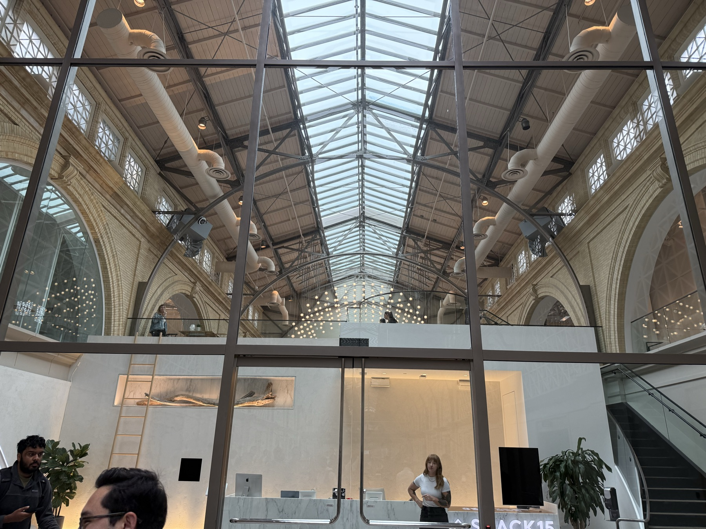
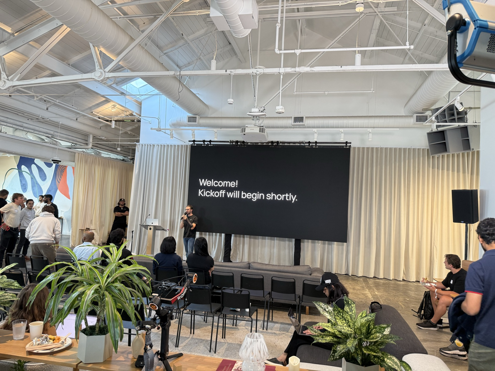
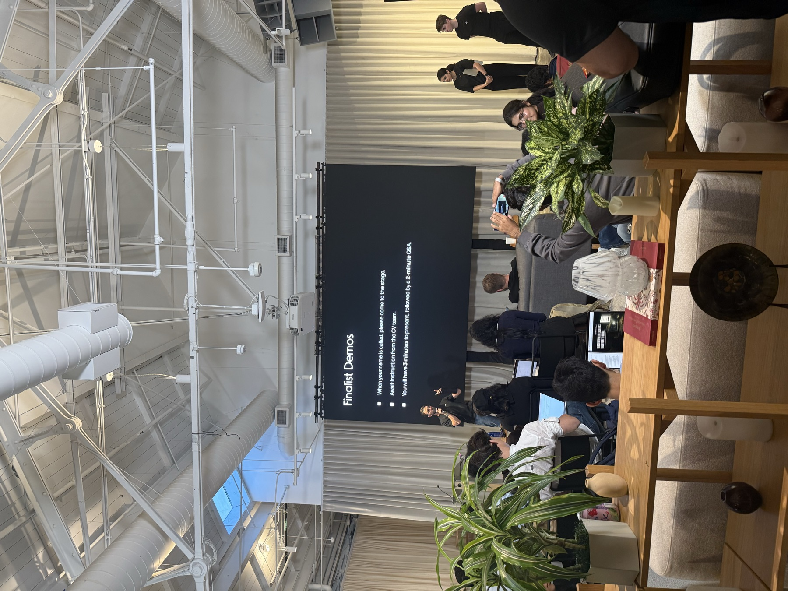

How the workspace is used
- Choose a research case.The clinician sees anatomy, structures, prescription, and starting constraints before the agent acts.
- Review the proposal.The agent states its intended technique and objectives; the human confirms or modifies them.
- Run a real optimization.RT Claude calls the pythontps engine and returns computed dose—not invented dashboard values.
- Compare what changed.Before-and-after dose, DVHs, and structure metrics appear together in the review workspace.
- Approve, reject, or modify.Every consequential transition stops at an explicit human decision and records that decision.
The interaction problem
Automating an optimizer is not enough. A useful planning agent must show its proposal, expose the dose change, accept correction, preserve the decision history, and stop for approval before consequential transitions.
What I built
The interface connects Claude tool use to the pythontps research engine. It presents CT and dose, before-and-after plan comparisons, DVH overlays, metric deltas, and explicit approve, reject, or modify actions. The current front end also explores radiopharmaceutical therapy and HDR brachytherapy views, plus a blinded A/B plan-review tool.
Built in San Francisco
I developed the first prototype during the Abridge × Anthropic × Lightspeed Healthcare AI Hackathon in San Francisco on July 18–19, 2026. These are photographs from the event—not promotional stock images.



Why it is separate from pythontps
pythontps is the research physics and planning stack. RT Claude is the human-facing control surface: it turns tool calls and engine outputs into a reviewable sequence. Keeping them separate makes it possible to test the interface without pretending that interface validation proves dose-engine validity.
The boundary matters
This remains a hackathon and research prototype. Demo views and research-engine output are clearly separated, and DICOM export does not make a plan clinically deliverable. Clinical deployment would require independent validation, security controls, workflow integration, regulatory review, commissioning, and site-specific QA.
← All projects